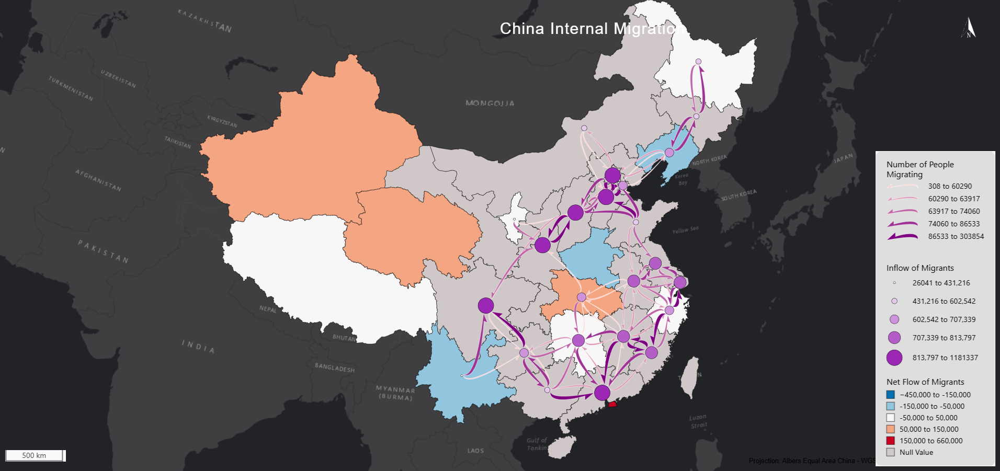

For the choropleth base map, I used a diverging color scheme and manual breaks for easier readability and perception. The attribute mapped is Net internal Migration flow, this shows which providences people are moving too or away from. There is an issue with the data, several providences had no data for this variable making the map incomplete, the other data for the nodes was able to cover some of these areas but not all. I used a blue- red diverging scheme because of previous class discussions on color perception. I feel like people often perceive more blue hues as less magnitude and red hues as higher magnitude. I used this to my advantage to make it easy to see where people are leaving vs migrating too. White works well as a good natural middle color. I used natural breaks because the scale of migration was difficult to classify with other methods. Specifically, I wanted to be able to make a class around 0 but not split at zero. Creating a class from –50k to 50k shows the areas where there is negligible migration. The providences of China are very well populated so a 50k difference is not as noticeable in a wide scale. The other classes were created to show the magnitude of people migrating.
For the nodes on the map, I used quantile classification and a continues purple color scheme. The nodes are a relative location because that is what the data I was given had. This works because we are looking at providence wide data not city. The graduated symbols and change in color make it easy to tell which class lines up with which point and the difference is intuitive. The purple color scheme was arbitrary, however matching the flow lines was not. Some issues with the size of the nodes arrived from overlapping but I decided that it was better to have some overlap than to make the nodes harder to tell apart. I used quantile classification to show where the most and least people are going which I feel aids in interpretation.
For the flow lines I used curved, asymmetric flow lines which were found in the 2017 study to be the most effective for directional perception. The gradual color scheme also helps to display the change in magnitude between the lines. I chose the purple color scheme to match the nodes, which creates an interesting visual as you can see the thicker, purple lines going into the large purple nodes. I used a white outline on the flow lines because it seemed to limit simultaneous contrast. The black outlines seemed to affect the perception of the color of the flow lines, at least for me. Overall, there are some issues with this map especially clutter in the eastern providences. It was difficult to make decisions on how to cut the map down without sacrificing interpretation. I moved down the flow lines to the top 80 which I liked because it still showed the areas where only a few thousand people were going. Also lines that flow in 2 directions make it more difficult to read. The paper mentions that long lines are more prominent than shorter ones, drawing more attention and making them perceive higher in magnitude.